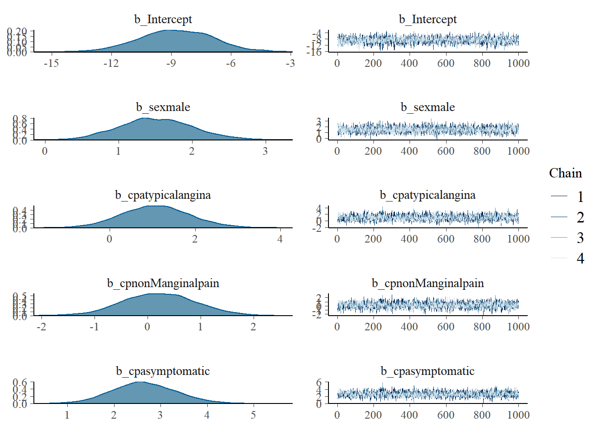
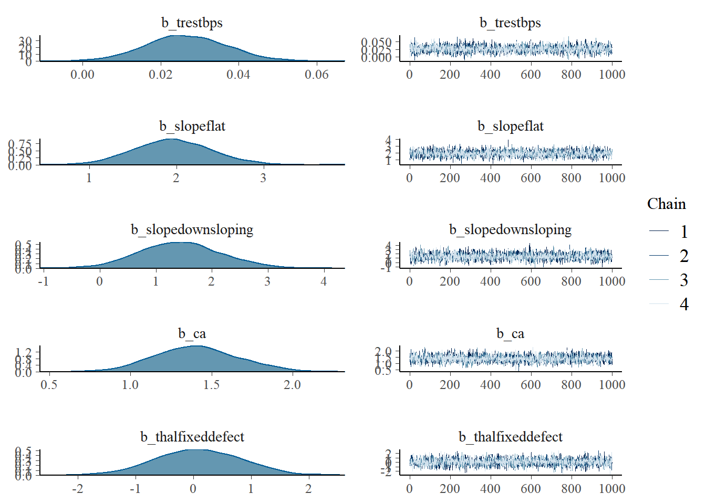
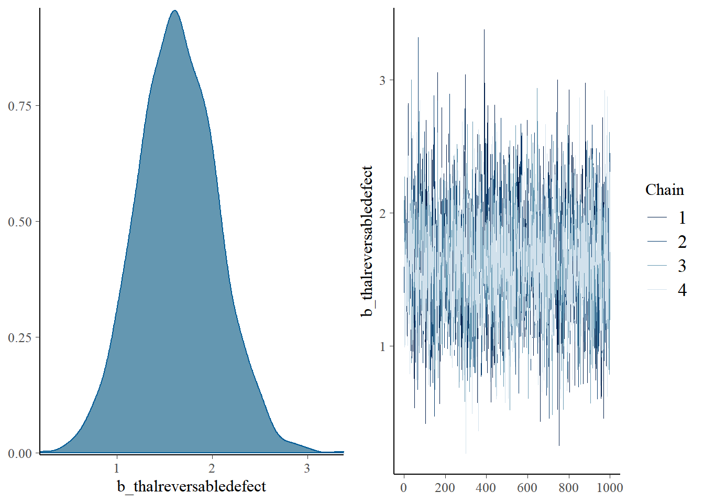
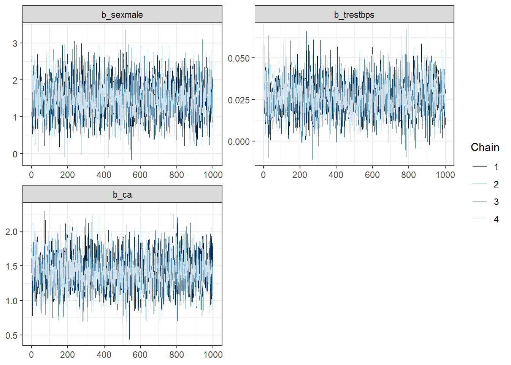
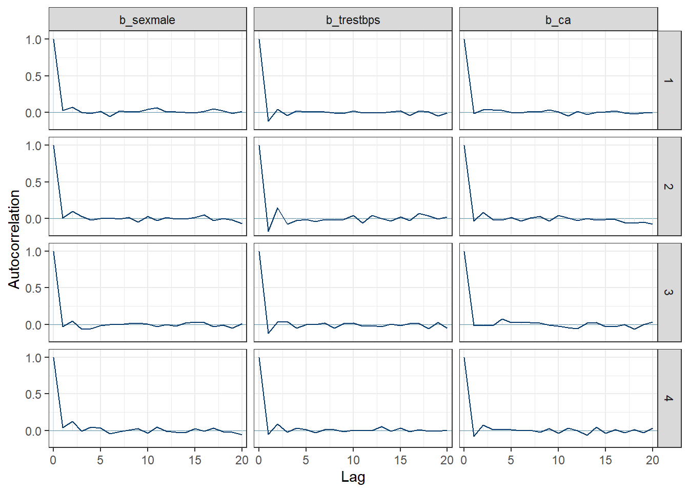
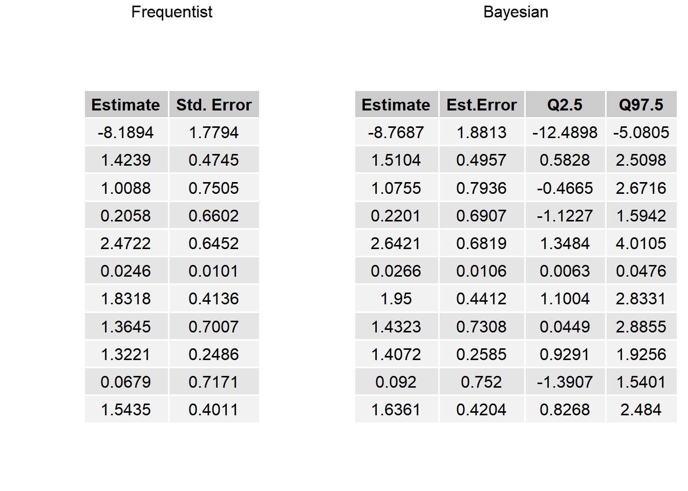
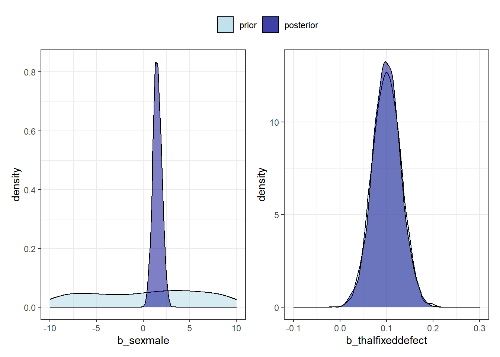

library(summarytools)
library(tidyverse)
library(brms)
library(bayesplot)
library(tidybayes)
library(gridExtra)
library(patchwork) 4 Logistic Regression Using brms
4.1 Load Relevant Libraries
4.2 Logistic Regression
The goal of logistic regression is to find the best fitting model to describe the relationship between the dichotomous characteristic of interest (response or outcome) and a set of independent (predictor or explanatory) variables.
Data for this exercise heart_cleveland_upload.csv was obtained here (https://www.kaggle.com/datasets/cherngs/heart-disease-cleveland-uci). It is a multivariate dataset composed of 14 columns shown below:
- age: age in years
- sex: sex [1 = male; 0 = female]
- cp: chest pain type [0 = typical angina; 1 = atypical angina; 2 = non-anginal pain; 3 = asymptomatic]
- trestbps: resting blood pressure in mm Hg on admission to the hospital
- chol: serum cholestoral in mg/dl
- fbs: fasting blood sugar > 120 mg/dl [1 = true; 0 = false]
- restecg: resting electrocardiographic results [0 = normal; 1 = having ST-T wave abnormality (T wave inversions and/or ST elevation or depression of > 0.05 mV); 2 = showing probable or definite left ventricular hypertrophy by Estes’ criteria]
- thalach: maximum heart rate achieved
- exang: exercise induced angina [1 = yes; 0 = no]
- oldpeak = ST depression induced by exercise relative to rest
- slope: the slope of the peak exercise ST segment [0 = upsloping; 1 = flat; 2 = downsloping]
- ca: number of major vessels (0-3) colored by flourosopy
- thal: thallium stress test result [0 = normal; 1 = fixed defect; 2 = reversible defect]
- condition: 0 = no disease, 1 = disease
4.3 Import Data
lrDataRaw <- read.csv("data/heart_cleveland_upload.csv") %>%
as_tibble()4.4 Data Processing
Convert categorical explanatory variables to factors
lrData <- lrDataRaw %>%
mutate(sex = factor(sex, levels = c(0, 1), labels = c("female", "male")),
cp = factor(cp, levels = 0:3,
labels = c("typical angina", "atypical angina", "non-anginal pain", "asymptomatic")),
fbs = factor(fbs, levels = c(0, 1), labels = c("false", "true")),
restecg = factor(restecg, levels = 0:2, labels = c("normal", "abnormal ST", "LV hypertrophy")),
exang = factor(exang, levels = c(0, 1), labels = c("no", "yes")),
slope = factor(slope, levels = 0:2, labels = c("upsloping", "flat", "downsloping")),
thal = factor(thal, levels = 0:2, labels = c("normal", "fixed defect", "reversable defect")))
lrData# A tibble: 297 x 14
age sex cp trest~1 chol fbs restecg thalach exang oldpeak slope
<int> <fct> <fct> <int> <int> <fct> <fct> <int> <fct> <dbl> <fct>
1 69 male typical~ 160 234 true LV hyp~ 131 no 0.1 flat
2 69 female typical~ 140 239 false normal 151 no 1.8 upsl~
3 66 female typical~ 150 226 false normal 114 no 2.6 down~
4 65 male typical~ 138 282 true LV hyp~ 174 no 1.4 flat
5 64 male typical~ 110 211 false LV hyp~ 144 yes 1.8 flat
6 64 male typical~ 170 227 false LV hyp~ 155 no 0.6 flat
7 63 male typical~ 145 233 true LV hyp~ 150 no 2.3 down~
8 61 male typical~ 134 234 false normal 145 no 2.6 flat
9 60 female typical~ 150 240 false normal 171 no 0.9 upsl~
10 59 male typical~ 178 270 false LV hyp~ 145 no 4.2 down~
# ... with 287 more rows, 3 more variables: ca <int>, thal <fct>,
# condition <int>, and abbreviated variable name 1: trestbps4.5 Data Summary
print(summarytools::dfSummary(lrData,
varnumbers = FALSE,
valid.col = FALSE,
graph.magnif = 0.76),
method = "render")Data Frame Summary
lrDataDimensions: 297 x 14
Duplicates: 0
| Variable | Stats / Values | Freqs (% of Valid) | Graph | Missing | ||||||||||||||||||||||||||||
|---|---|---|---|---|---|---|---|---|---|---|---|---|---|---|---|---|---|---|---|---|---|---|---|---|---|---|---|---|---|---|---|---|
| age [integer] |
|
41 distinct values |  |
0 (0.0%) | ||||||||||||||||||||||||||||
| sex [factor] |
|
|
 |
0 (0.0%) | ||||||||||||||||||||||||||||
| cp [factor] |
|
|
 |
0 (0.0%) | ||||||||||||||||||||||||||||
| trestbps [integer] |
|
50 distinct values |  |
0 (0.0%) | ||||||||||||||||||||||||||||
| chol [integer] |
|
152 distinct values |  |
0 (0.0%) | ||||||||||||||||||||||||||||
| fbs [factor] |
|
|
 |
0 (0.0%) | ||||||||||||||||||||||||||||
| restecg [factor] |
|
|
 |
0 (0.0%) | ||||||||||||||||||||||||||||
| thalach [integer] |
|
91 distinct values |  |
0 (0.0%) | ||||||||||||||||||||||||||||
| exang [factor] |
|
|
 |
0 (0.0%) | ||||||||||||||||||||||||||||
| oldpeak [numeric] |
|
40 distinct values |  |
0 (0.0%) | ||||||||||||||||||||||||||||
| slope [factor] |
|
|
 |
0 (0.0%) | ||||||||||||||||||||||||||||
| ca [integer] |
|
|
 |
0 (0.0%) | ||||||||||||||||||||||||||||
| thal [factor] |
|
|
 |
0 (0.0%) | ||||||||||||||||||||||||||||
| condition [integer] |
|
|
 |
0 (0.0%) |
4.6 Data Exploration
First lets explore some relationships between categorical explanatory variables and outcome variable
lrData %>%
select(sex, cp, fbs, restecg, exang, slope, thal, condition) %>%
pivot_longer(cols = c(sex, cp, fbs, restecg, exang, slope, thal),
values_to = "value") %>%
group_by(name, value) %>%
summarize(condition = sum(condition))# A tibble: 19 x 3
# Groups: name [7]
name value condition
<chr> <fct> <int>
1 cp typical angina 7
2 cp atypical angina 9
3 cp non-anginal pain 18
4 cp asymptomatic 103
5 exang no 63
6 exang yes 74
7 fbs false 117
8 fbs true 20
9 restecg normal 55
10 restecg abnormal ST 3
11 restecg LV hypertrophy 79
12 sex female 25
13 sex male 112
14 slope upsloping 36
15 slope flat 89
16 slope downsloping 12
17 thal normal 37
18 thal fixed defect 12
19 thal reversable defect 884.7 Model Fit
We will start with a Bayesian binary logistic regression with non-informative priors.
brm function is used to fit Bayesian generalized (non-)linear multivariate multilevel models using Stan for full Bayesian inference.
The brm has three basic arguments: formula, data, and family. warmup specifies the burn-in period (i.e. number of iterations that should be discarded); iter specifies the total number of iterations (including the burn-in iterations); chains specifies the number of chains; inits specifies the starting values of the iterations (normally you can either use the maximum likelihood esimates of the parameters as starting values, or simply ask the algorithm to start with zeros); cores specifies the number of cores used for the algorithm; seed specifies the random seed, allowing for replication of results.
lrfit1 <- brm(condition ~ age + sex + cp + trestbps + chol + fbs + restecg + thalach + exang + oldpeak + slope + ca + thal,
data = lrData,
family = bernoulli(),
chains = 4,
warmup = 1000,
iter = 2000,
seed = 12345,
refresh = 0,
backend = "cmdstanr")4.8 Model Evaluation
4.8.1 Summary
Below is the summary of the logistic regression model fit:
summary(lrfit1) Family: bernoulli
Links: mu = logit
Formula: condition ~ age + sex + cp + trestbps + chol + fbs + restecg + thalach + exang + oldpeak + slope + ca + thal
Data: lrData (Number of observations: 297)
Draws: 4 chains, each with iter = 2000; warmup = 1000; thin = 1;
total post-warmup draws = 4000
Population-Level Effects:
Estimate Est.Error l-95% CI u-95% CI Rhat Bulk_ESS
Intercept -6.78 3.04 -12.81 -0.89 1.00 4434
age -0.02 0.03 -0.07 0.03 1.00 4079
sexmale 1.73 0.55 0.68 2.84 1.00 3858
cpatypicalangina 1.46 0.82 -0.16 3.07 1.00 3348
cpnonManginalpain 0.30 0.70 -1.06 1.67 1.00 3631
cpasymptomatic 2.41 0.70 1.07 3.80 1.00 2878
trestbps 0.03 0.01 0.01 0.05 1.00 5297
chol 0.01 0.00 -0.00 0.01 1.00 5351
fbstrue -0.65 0.65 -1.95 0.60 1.00 4801
restecgabnormalST 1.20 2.22 -2.74 5.66 1.00 4867
restecgLVhypertrophy 0.54 0.41 -0.25 1.34 1.00 3893
thalach -0.02 0.01 -0.04 0.00 1.00 4119
exangyes 0.78 0.46 -0.12 1.68 1.00 4387
oldpeak 0.43 0.25 -0.04 0.92 1.00 4092
slopeflat 1.25 0.52 0.23 2.30 1.00 3410
slopedownsloping 0.47 0.99 -1.56 2.31 1.00 3793
ca 1.47 0.30 0.92 2.10 1.00 4288
thalfixeddefect -0.01 0.84 -1.70 1.61 1.00 4322
thalreversabledefect 1.55 0.45 0.69 2.44 1.00 4912
Tail_ESS
Intercept 3102
age 3412
sexmale 3303
cpatypicalangina 3069
cpnonManginalpain 3379
cpasymptomatic 3052
trestbps 2891
chol 3134
fbstrue 3118
restecgabnormalST 2843
restecgLVhypertrophy 3196
thalach 2805
exangyes 2849
oldpeak 2933
slopeflat 2601
slopedownsloping 2841
ca 3626
thalfixeddefect 2726
thalreversabledefect 3112
Draws were sampled using sample(hmc). For each parameter, Bulk_ESS
and Tail_ESS are effective sample size measures, and Rhat is the potential
scale reduction factor on split chains (at convergence, Rhat = 1).Looking at the 95% credible intervals for some of the estimates, they are very wide and include zero suggesting very uncertain estimates. Based on this finding, let’s update the model and keep only sex, cp, trestbps, slope, ca, and thal as covariates.
lrfit2 <- brm(condition ~ sex + cp + trestbps + slope + ca + thal,
data = lrData,
family = bernoulli(),
chains = 4,
warmup = 1000,
iter = 2000,
seed = 12345,
refresh = 0,
backend = "cmdstanr")Below is the summary of the updated logistic regression fit:
summary(lrfit2) Family: bernoulli
Links: mu = logit
Formula: condition ~ sex + cp + trestbps + slope + ca + thal
Data: lrData (Number of observations: 297)
Draws: 4 chains, each with iter = 2000; warmup = 1000; thin = 1;
total post-warmup draws = 4000
Population-Level Effects:
Estimate Est.Error l-95% CI u-95% CI Rhat Bulk_ESS
Intercept -8.77 1.88 -12.49 -5.08 1.00 2629
sexmale 1.51 0.50 0.58 2.51 1.00 3479
cpatypicalangina 1.08 0.79 -0.47 2.67 1.00 2046
cpnonManginalpain 0.22 0.69 -1.12 1.59 1.00 1989
cpasymptomatic 2.64 0.68 1.35 4.01 1.00 1955
trestbps 0.03 0.01 0.01 0.05 1.00 4664
slopeflat 1.95 0.44 1.10 2.83 1.00 3344
slopedownsloping 1.43 0.73 0.04 2.89 1.00 3519
ca 1.41 0.26 0.93 1.93 1.00 3633
thalfixeddefect 0.09 0.75 -1.39 1.54 1.00 3626
thalreversabledefect 1.64 0.42 0.83 2.48 1.00 4102
Tail_ESS
Intercept 2749
sexmale 3054
cpatypicalangina 2519
cpnonManginalpain 2670
cpasymptomatic 2641
trestbps 2928
slopeflat 3188
slopedownsloping 3028
ca 2956
thalfixeddefect 3112
thalreversabledefect 2862
Draws were sampled using sample(hmc). For each parameter, Bulk_ESS
and Tail_ESS are effective sample size measures, and Rhat is the potential
scale reduction factor on split chains (at convergence, Rhat = 1).4.8.2 Model Convergence
The posterior distributions of the parameters: density and trace plots of the MCMC chains:
plot(lrfit2)


The chains seem to be well mixed for all the parameters.
bayesplot package gives us a bit more control on the plotting features.
Trace Plots:
post <- as_draws_df(lrfit2, add_chain = T)
names(post) [1] "b_Intercept" "b_sexmale" "b_cpatypicalangina"
[4] "b_cpnonManginalpain" "b_cpasymptomatic" "b_trestbps"
[7] "b_slopeflat" "b_slopedownsloping" "b_ca"
[10] "b_thalfixeddefect" "b_thalreversabledefect" "lprior"
[13] "lp__" ".chain" ".iteration"
[16] ".draw" ## Example with a few select parameters
mcmc_trace(post[,c("b_sexmale", "b_trestbps", "b_ca",
".chain", ".iteration", ".draw")],
facet_args = list(ncol = 2)) +
theme_bw()
Autocorrelation Plots:
mcmc_acf(post, pars = c("b_sexmale", "b_trestbps", "b_ca")) +
theme_bw()
4.9 Frequentist Approach
Just for fun, let’s compare the estimation process using a frequentist approach using glm.
lrfit3 <- glm(formula = condition ~ sex + cp+ trestbps + slope + ca + thal,
family = "binomial",
data = lrData)summary(lrfit3)
Call:
glm(formula = condition ~ sex + cp + trestbps + slope + ca +
thal, family = "binomial", data = lrData)
Deviance Residuals:
Min 1Q Median 3Q Max
-2.8277 -0.4972 -0.1416 0.4734 2.8011
Coefficients:
Estimate Std. Error z value Pr(>|z|)
(Intercept) -8.18943 1.77935 -4.602 4.17e-06 ***
sexmale 1.42390 0.47448 3.001 0.002691 **
cpatypical angina 1.00877 0.75051 1.344 0.178911
cpnon-anginal pain 0.20579 0.66020 0.312 0.755265
cpasymptomatic 2.47223 0.64521 3.832 0.000127 ***
trestbps 0.02460 0.01013 2.427 0.015205 *
slopeflat 1.83180 0.41358 4.429 9.46e-06 ***
slopedownsloping 1.36450 0.70070 1.947 0.051494 .
ca 1.32207 0.24861 5.318 1.05e-07 ***
thalfixed defect 0.06788 0.71713 0.095 0.924585
thalreversable defect 1.54348 0.40110 3.848 0.000119 ***
---
Signif. codes: 0 '***' 0.001 '**' 0.01 '*' 0.05 '.' 0.1 ' ' 1
(Dispersion parameter for binomial family taken to be 1)
Null deviance: 409.95 on 296 degrees of freedom
Residual deviance: 205.97 on 286 degrees of freedom
AIC: 227.97
Number of Fisher Scoring iterations: 6Comparing the model estimates:
t1 <- summary(lrfit3)$coefficients[, 1:2]
t2 <- fixef(lrfit2)[, c(1, 2, 3, 4)]
gridExtra::grid.arrange(arrangeGrob(tableGrob(round(t1, 4), rows = NULL), top = "Frequentist"),
arrangeGrob(tableGrob(round(t2, 4), rows = NULL), top = "Bayesian"), ncol = 2)
From the estimates above, the Bayesian model estimates are very close to those of the frequentist model. The interpretation of these estimates is the same between these approaches. However, the interpretation of the uncertainty intervals is not the same between the two models.
With the frequentist model, the 95% uncertainty interval also called the confidence interval suggests that under repeated sampling, 95% of the resulting uncertainty intervals would cover the true population value. This is different from saying that there is a 95% chance that the confidence interval contains the true population value (not probability statements).
With the Bayesian model, the 95% uncertainty interval also called the credibility interval is more interpretable and states that there is 95% chance that the true population value falls within this interval. When the 95% credibility intervals do not contain zero, we conclude that the respective model parameters are less uncertain and likely more meaningful.
4.10 Priors
Prior specifications are useful in Bayesian modeling as they provide a means to include existing information on parameters of interest. As an example, if we are interested in learning about new population (e.g. pediatrics) and have the adult information on estimated parameters, including prior distributions based on adult parameters give us flexibility to explicitly apply our understanding on the estimation of such parameters for the pediatric population.
To see a list of all the priors that can be specified, we can use get_prior.
get_prior(condition ~ sex + cp + trestbps + slope + ca + thal,
data = lrData) prior class coef group resp dpar nlpar lb
(flat) b
(flat) b ca
(flat) b cpasymptomatic
(flat) b cpatypicalangina
(flat) b cpnonManginalpain
(flat) b sexmale
(flat) b slopedownsloping
(flat) b slopeflat
(flat) b thalfixeddefect
(flat) b thalreversabledefect
(flat) b trestbps
student_t(3, 0, 2.5) Intercept
student_t(3, 0, 2.5) sigma 0
ub source
default
(vectorized)
(vectorized)
(vectorized)
(vectorized)
(vectorized)
(vectorized)
(vectorized)
(vectorized)
(vectorized)
(vectorized)
default
default4.10.1 Set Up Priors
Let’s set some priors and let’s assume we know precisely one of the priors thalfixeddefect.
prior1 <- c(set_prior("normal(5, 100)", class = "b", coef = "sexmale"),
set_prior("normal(0.1, 0.03)", class = "b", coef = "thalfixeddefect"),
set_prior("normal(5, 100)", class = "b", coef = "thalreversabledefect"))4.10.2 Model Fit with Priors
We can incorporate the priors into the model as follows:
lrfit4 <- brm(condition ~ sex + cp + trestbps + slope + ca + thal,
data = lrData,
family = bernoulli(),
prior = prior1,
chains = 4,
warmup = 1000,
iter = 2000,
seed = 12345,
refresh = 0,
backend = "cmdstanr",
sample_prior = TRUE)To see how the priors have been updated in the model, we use prior_summary:
prior_summary(lrfit4) prior class coef group resp dpar nlpar lb
(flat) b
(flat) b ca
(flat) b cpasymptomatic
(flat) b cpatypicalangina
(flat) b cpnonManginalpain
normal(5, 100) b sexmale
(flat) b slopedownsloping
(flat) b slopeflat
normal(0.1, 0.03) b thalfixeddefect
normal(5, 100) b thalreversabledefect
(flat) b trestbps
student_t(3, 0, 2.5) Intercept
ub source
default
(vectorized)
(vectorized)
(vectorized)
(vectorized)
user
(vectorized)
(vectorized)
user
user
(vectorized)
defaultsummary(lrfit4) Family: bernoulli
Links: mu = logit
Formula: condition ~ sex + cp + trestbps + slope + ca + thal
Data: lrData (Number of observations: 297)
Draws: 4 chains, each with iter = 2000; warmup = 1000; thin = 1;
total post-warmup draws = 4000
Population-Level Effects:
Estimate Est.Error l-95% CI u-95% CI Rhat Bulk_ESS
Intercept -8.78 1.84 -12.53 -5.28 1.00 2760
sexmale 1.51 0.47 0.61 2.44 1.00 3450
cpatypicalangina 1.12 0.77 -0.36 2.67 1.00 2617
cpnonManginalpain 0.26 0.69 -1.08 1.61 1.00 2529
cpasymptomatic 2.66 0.67 1.40 4.02 1.00 2378
trestbps 0.03 0.01 0.01 0.05 1.00 4305
slopeflat 1.95 0.41 1.16 2.77 1.00 3480
slopedownsloping 1.45 0.72 0.08 2.86 1.00 4050
ca 1.41 0.26 0.93 1.97 1.00 3831
thalfixeddefect 0.10 0.03 0.04 0.16 1.00 4923
thalreversabledefect 1.64 0.40 0.84 2.43 1.00 4412
Tail_ESS
Intercept 2667
sexmale 3235
cpatypicalangina 2902
cpnonManginalpain 2960
cpasymptomatic 2460
trestbps 2811
slopeflat 2927
slopedownsloping 2639
ca 2790
thalfixeddefect 2850
thalreversabledefect 2905
Draws were sampled using sample(hmc). For each parameter, Bulk_ESS
and Tail_ESS are effective sample size measures, and Rhat is the potential
scale reduction factor on split chains (at convergence, Rhat = 1).4.10.3 Compare Prior and Posterior Samples
Let’s compare the prior and posterior distributions for a non-informative prior sexmale and a highly informative prior thalfixeddefect
priorSamples <- prior_draws(lrfit4, c("b_sexmale", "b_thalfixeddefect"))
posteriorSamples <- as_draws_df(lrfit4, c("b_sexmale", "b_thalfixeddefect"))
p1 <- ggplot() +
geom_density(data = priorSamples, aes(x = b_sexmale, fill = "prior"), alpha = 0.5) +
geom_density(data = posteriorSamples, aes(x = b_sexmale, fill = "posterior"), alpha = 0.5) +
scale_fill_manual(name = "", values = c("prior" = "lightblue", "posterior" = "darkblue")) +
scale_x_continuous (limits = c(-10, 10)) + theme_bw()
p2 <- ggplot() +
geom_density(data = priorSamples, aes(x = b_thalfixeddefect, fill = "prior"), alpha = 0.5) +
geom_density(data = posteriorSamples, aes(x = b_thalfixeddefect, fill = "posterior"), alpha = 0.5) +
scale_fill_manual(name = "", values = c("prior" = "lightblue", "posterior" = "darkblue")) +
scale_x_continuous(limits = c(-0.1, 0.3)) + theme_bw() + theme(legend.position = "top")
p3 <- p1 + p2 & theme(legend.position = "top")
p3 + plot_layout(guides = "collect")Warning: Removed 3696 rows containing non-finite values (stat_density).
4.11 Hands-On Example
A simulated dataset for this exercise simlrcovs.csv was developed. It has the following columns:
- DOSE: Dose of drug in mg [20, 50, 100, 200 mg]
- CAVG: Average concentration until the time of the event (mg/L)
- ECOG: ECOG performance status [0 = Fully active; 1 = Restricted in physical activity]
- RACE: Race [1 = Others; 2 = White]
- SEX: Sex [1 = Female; 2 = Male]
- BRNMETS: Brain metastasis [1 = Yes; 0 = No]
- DV: Event [1 = Yes; 0 = No]
4.11.1 Import Dataset
# Read the dataset
hoRaw <- read.csv("data/simlrcovs.csv") %>%
as_tibble()4.11.2 Data Processing
Convert categorical explanatory variables to factors
hoData <- hoRaw %>%
mutate(ECOG = factor(ECOG, levels = c(0, 1), labels = c("Active", "Restricted")),
RACE = factor(RACE, levels = c(0, 1), labels = c("White", "Others")),
SEX = factor(SEX, levels = c(0, 1), labels = c("Male", "Female")),
BRNMETS = factor(BRNMETS, levels = c(0, 1), labels = c("No", "Yes")))
hoData# A tibble: 200 x 7
DOSE CAVG ECOG RACE SEX BRNMETS DV
<int> <dbl> <fct> <fct> <fct> <fct> <int>
1 20 203. Active White Female Yes 0
2 20 202. Restricted White Female No 0
3 20 287. Restricted Others Female No 0
4 20 174. Restricted Others Male Yes 0
5 20 270. Active Others Male Yes 0
6 20 265. Active Others Female No 1
7 20 206. Restricted Others Female No 0
8 20 253. Active Others Male No 1
9 20 186. Active White Male No 0
10 20 186. Restricted Others Female No 1
# ... with 190 more rows4.11.3 Data Summary
xxxxxx4.11.4 Model Fit
With all covariates except DOSE (since we have exposure as a driver)
hofit1 <- brm(xxxxxx ~ xxxxxx,
data = xxxxxx,
family = xxxxxx,
chains = 4,
warmup = 1000,
iter = 2000,
seed = 12345,
refresh = 0,
backend = "cmdstanr")4.11.5 Model Evaluation
Get the summary of the model and look at the fixed efects
xxxxxx4.11.6 Final Model
Refit the model with meaningful covariates
hofit2 <- brm(xxxxxx ~ xxxxxx,
data = xxxxxx,
family = xxxxxx,
chains = 4,
warmup = 1000,
iter = 2000,
seed = 12345,
refresh = 0,
backend = "cmdstanr")4.11.7 Summary
xxxxxx4.11.8 Model Convergence
hopost <- as_draws_df(xxxxxx, add_chain = T)
mcmc_trace(xxxxxx) +
theme_bw()mcmc_acf(xxxxxx) +
theme_bw()4.11.9 Visual Interpretation of the Model (Bonus Points!)
We can do this two ways.
4.11.9.1 Generate Posterior Probabilities Manually
Generate posterior probability of the event using the estimates and their associated posterior distributions
out <- hofit2 %>%
spread_draws(b_Intercept, b_CAVG, b_RACEOthers) %>%
mutate(CAVG = list(seq(100, 4000, 10))) %>%
unnest(cols = c(CAVG)) %>%
mutate(RACE = list(0:1)) %>%
unnest(cols = c(RACE)) %>%
mutate(PRED = exp(b_Intercept + b_CAVG * CAVG + b_RACEOthers * RACE)/(1 + exp(b_Intercept + b_CAVG * CAVG + b_RACEOthers * RACE))) %>%
group_by(CAVG, RACE) %>%
summarise(pred_m = mean(PRED, na.rm = TRUE),
pred_low = quantile(PRED, prob = 0.025),
pred_high = quantile(PRED, prob = 0.975)) %>%
mutate(RACE = factor(RACE, levels = c(0, 1), labels = c("White", "Others")))Plot The Probability of the Event vs Average Concentration
out %>%
ggplot(aes(x = CAVG, y = pred_m, color = factor(RACE))) +
geom_line() +
geom_ribbon(aes(ymin = pred_low, ymax = pred_high, fill = factor(RACE)), alpha = 0.2) +
ylab("Predicted Probability of the Event\n") +
xlab("\nAverage Concentration until the Event (mg/L)") +
theme_bw() +
scale_fill_discrete("") +
scale_color_discrete("") +
theme(legend.position = "top")4.11.9.2 Generate Posterior Probabilities Using Helper Functions from brms and tidybayes
Generate posterior probability of the event using the estimates and their associated posterior distributions
out2 <- hofit2 %>%
epred_draws(newdata = expand_grid(CAVG = seq(100, 4000, by = 10),
RACE = c("White", "Others")),
value = "PRED") %>%
ungroup() %>%
mutate(RACE = factor(RACE, levels = c("White", "Others"),
labels = c("White", "Others")))Plot The Probability of the Event vs Average Concentration
out2 %>%
ggplot() +
stat_lineribbon(aes(x = CAVG, y = PRED, color = RACE, fill = RACE),
.width = 0.95, alpha = 0.25) +
ylab("Predicted Probability of the Event\n") +
xlab("\nAverage Concentration until the Event (mg/L)") +
theme_bw() +
scale_fill_discrete("") +
scale_color_discrete("") +
theme(legend.position = "top") +
ylim(c(0, 1))